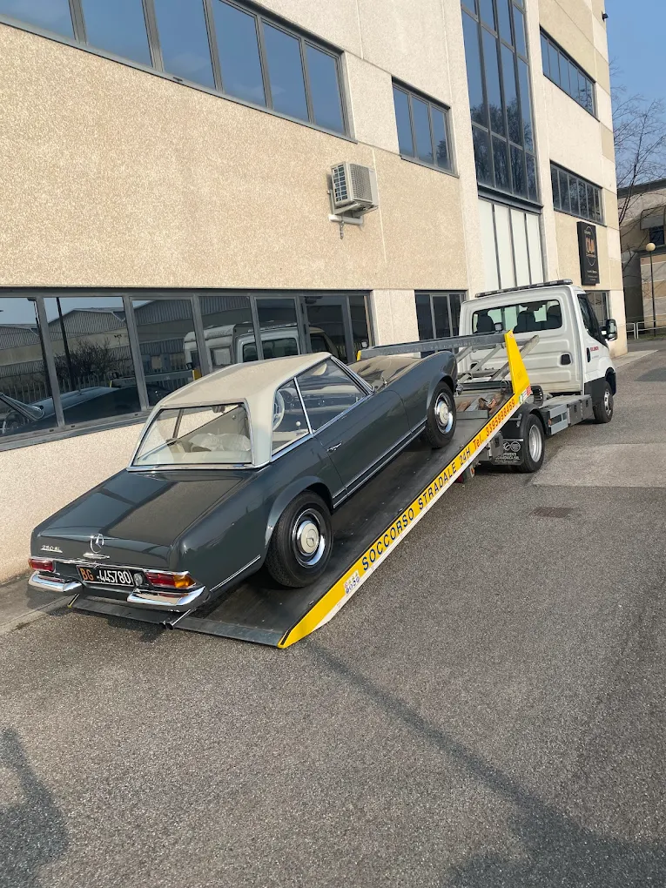
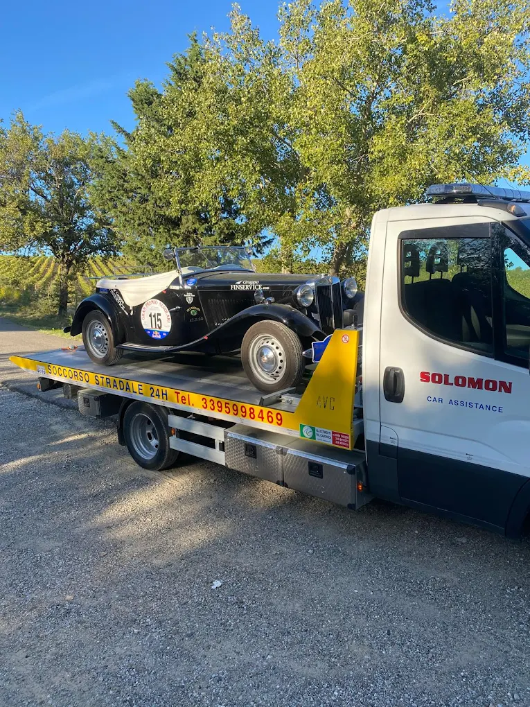
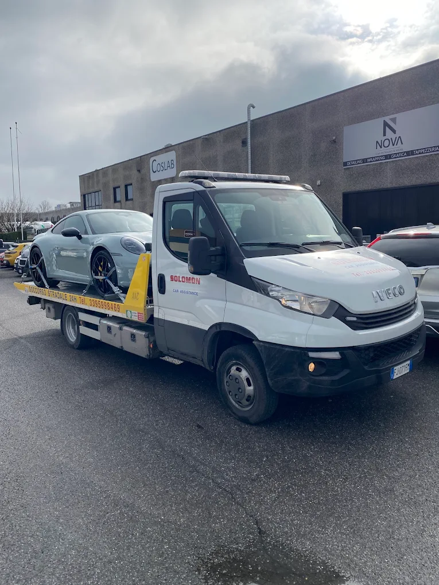
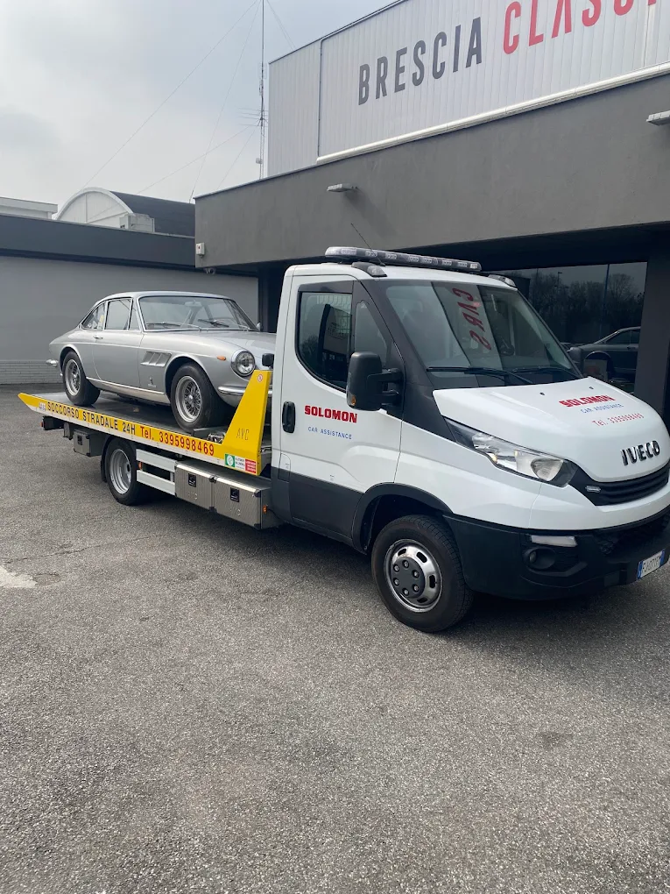
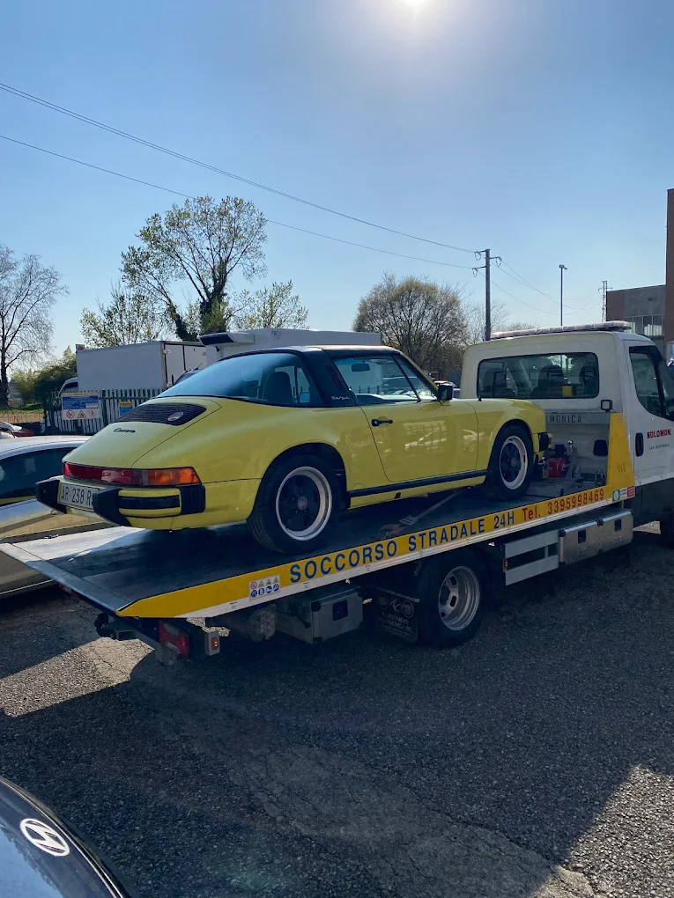
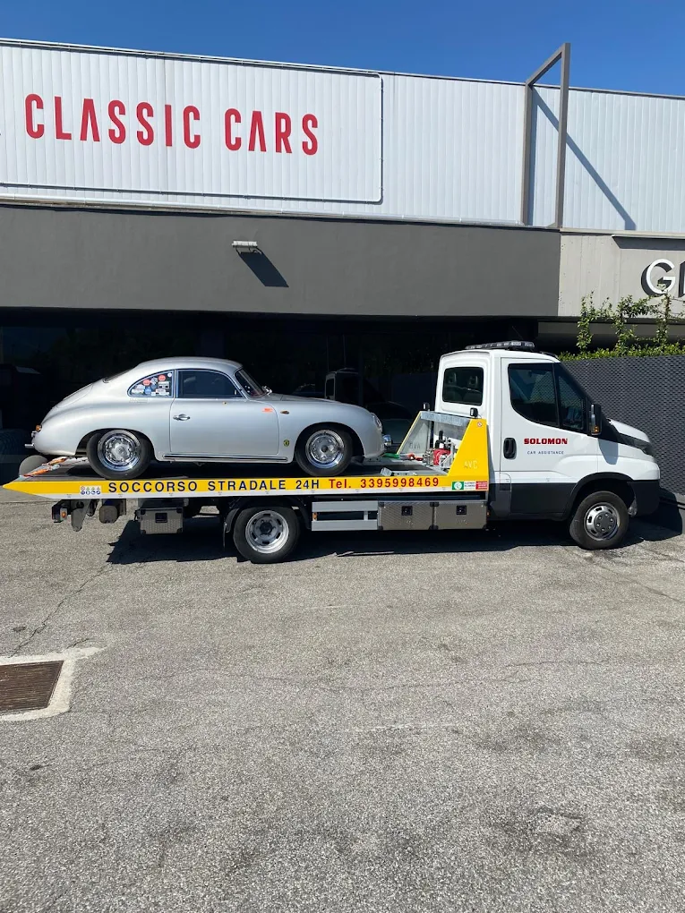
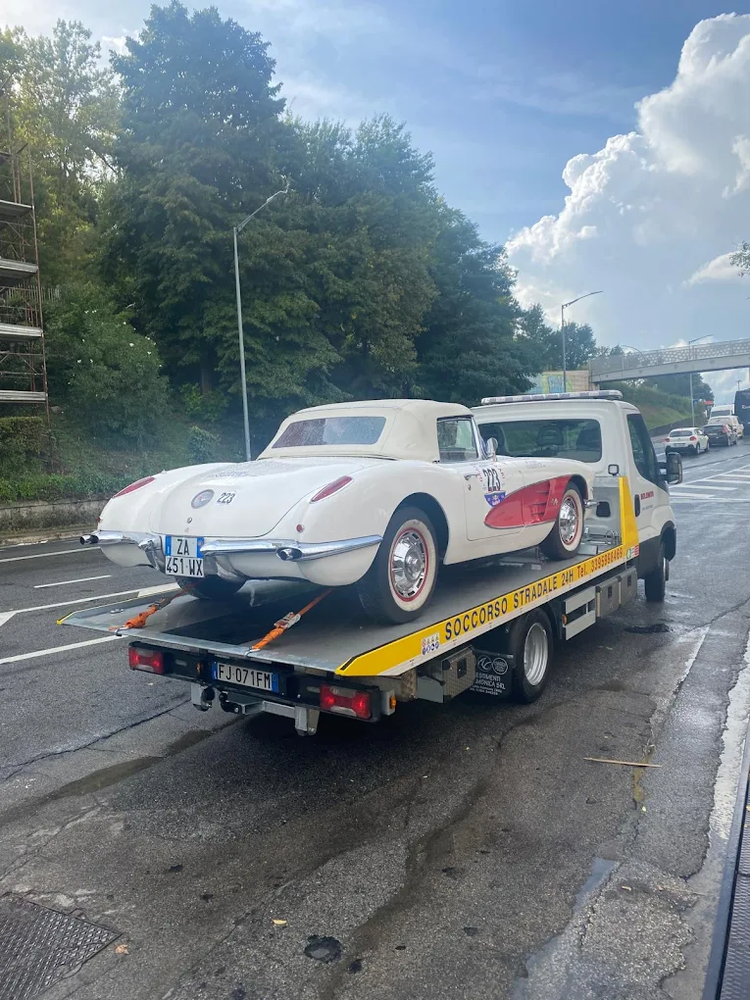
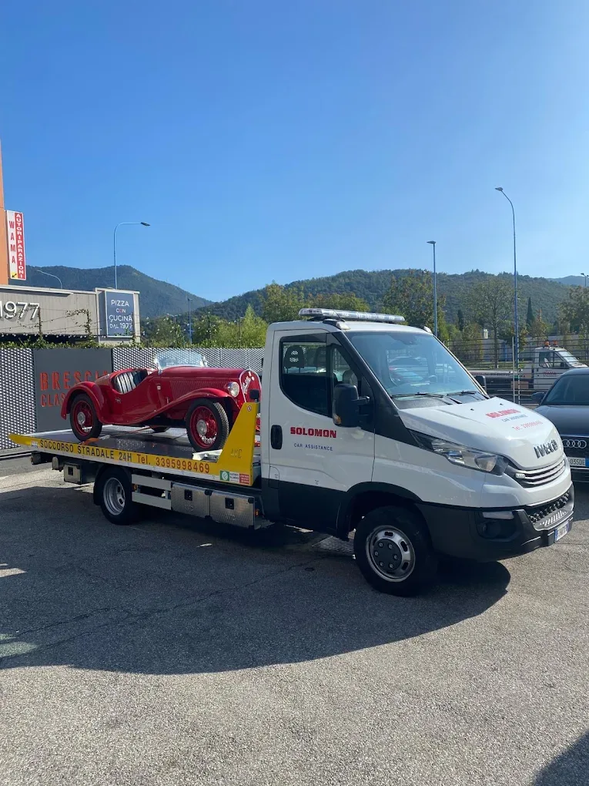

Brescia Città
Centro, quartieri, zone industriali. Meno di 30 minuti garantiti.
- Centro storico
- Zona industriale
- A4 · A21 · Tangenziale
Soccorso stradale a Brescia, provincia e Lago di Garda. Auto, moto, furgoni, auto d'epoca. 24 ore su 24.
Dal guasto in autostrada all'apertura porte a mezzanotte. Attivi 24 ore su 24.
Guasto, incidente o emergenza a Brescia e provincia. Interveniamo subito, a qualsiasi ora.
Trasporto verso officina o destinazione a tua scelta. Pianale ribaltabile Iveco professionale.
Moto e scooter trasportati con attrezzatura dedicata. Carico e scarico senza rischi.
Avviamento immediato o sostituzione batteria direttamente sul posto.
Apertura senza danni con tecnica professionale. Intervento rapido per ogni modello.
Rimasto a secco? Portiamo benzina o gasolio direttamente da te.
Tre passi, nessuna complicazione.
Chiama il 339 599 8469 o scrivici su WhatsApp. Rispondiamo subito, anche di notte.
Chiama oraUsa il geolocalizzatore per mandarci la posizione GPS su WhatsApp. Partiamo subito.
LocalizzatiIl carro attrezzi è da te in meno di 30 minuti a Brescia. Risolviamo sul posto o trasferiamo.
GarantitoAuto classiche, sportive e da collezione. Ogni veicolo caricato e trasportato con la stessa cura che riserveresti alla tua.


Chi ci chiama una volta, non chiama più nessun altro.

Brescia città, provincia e Lago di Garda — in meno di 30 minuti.
Centro, quartieri, zone industriali. Meno di 30 minuti garantiti.
Val Trompia, Val Sabbia, Franciacorta — tutta la provincia bresciana.
Desenzano, Sirmione, Salò, Gardone — sponda bresciana 24/7.
Auto classiche, sportive e da collezione. Ogni veicolo trattato con la massima cura.






Risposta immediata · 24 ore su 24
17 recensioni verificate su Google.
Ho chiamato per la mia auto rimasta ferma in superstrada, e sono arrivati subito, servizio buono e onesto. Grazie mille!
Prezzo onesto, servizio rapido. Grazie
Servizi molto disponibile e rapido voto 100/100
Tutto quello che vuoi sapere prima di chiamarci.
Mediamente 30 minuti in città. In provincia dipende dalla distanza, ma siamo sempre i più veloci. Attivi 24/7, 365 giorni l'anno.
Il numero di Solomon Car Assistance è +39 339 599 8469, attivo 24 ore su 24. Puoi anche scrivere su WhatsApp.
Sì. 24 ore su 24, 7 giorni su 7, 365 giorni l'anno. Anche a Ferragosto, Natale e Capodanno.
Sì, è la nostra specialità. Ferrari, Porsche, Mercedes, MG, Corvette — con pianale ribaltabile e protezioni anti-graffio dedicate.
Brescia città, tutta la provincia (Val Trompia, Val Sabbia, Franciacorta) e il Lago di Garda (Desenzano, Sirmione, Salò, Gardone).
Sì, la nostra flotta è attrezzata per moto, scooter, furgoni e SUV di qualsiasi dimensione.
Rilevati in un secondo e inviaci la posizione su WhatsApp — arriviamo prima.
Posizione privata finché non la condividi tu.
Giorno, notte, weekend, festivi. Sempre.
Telefono, WhatsApp o Google Maps — scegli tu.